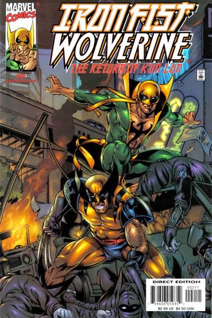
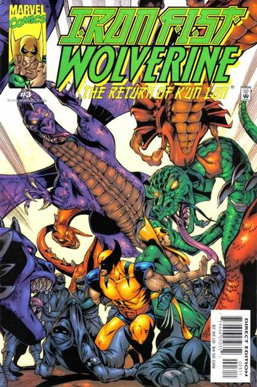
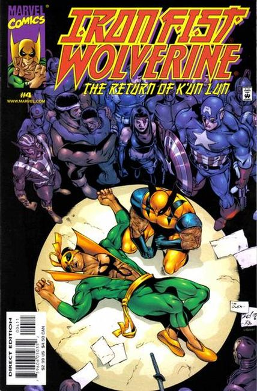

After his love Misty Knight is captured by The Hand, Iron Fist must travel to Tokyo to kick ninja tail. Danny Rand is hot on the trail of Junzo Moto, the young ninja that stole away the power of the Iron Fist! Meanwhile, Wolverine is investigating the recent resurgence of Hand activity in Tokyo where Junzo is attempting to bring about the return of the supernatural city of K'un Lun!

The mystical city of K'un L'un has returned, right in the middle of Tokyo! Can anyone stop Junzo Muto (the kid who stole the power of Iron Fist from Danny Rand) from taking over the world? Wolverine, Captain America and S.H.I.E.L.D. sure are gonna try!

Junzo Muto, young leader of The Hand, empowered with the Iron Fist force! After stealing Daniel Rand’s inner chi, Muto seems well on his way to becoming the new leader of K’un-Lun/Tokyo. But when Wolverine and Earth’s Mightiest break the mystic barriers between themselves and Muto, all bets are off! Will Iron Fist and Misty Knight be rescued at long last?

Will Iron Fist make the ultimate sacrifice? Will Wolverine kick the snot out of young upstart Junzo Muto? Will Captain America, Iron Man, Psylocke, Power Man, Sunfire and S.H.I.E.L.D. get fried by a squadron of dragons? Find out in the action-packed finale!